My Contribution
- Researched Odoo's architecture, including its modules, their functions, and the relationships between them — particularly how Inventory connects with other modules.
- Directly carried out most of the configuration and testing work within Odoo.
- Coordinated the team: assigned tasks, held meetings three times a week, and tracked progress and attendance using Excel.
- Reviewed and revised content and presentation slides prepared by team members before finalization.
- Outcome: successfully modeled a complete warehouse management workflow — covering product categorization, storage locations, stocktaking procedures, and payment processing — in line with the project requirements.
Key Design Decisions
- Configured Warehouses and Storage Locations before Products or BOM — a business needs to know where goods will be received and stored before modeling what flows through it.
- Sequenced the process starting from Purchase rather than Manufacturing: set up the warehouse → procure raw materials → receive into storage → produce → receive finished goods → sell and collect payment, mirroring how a manufacturing business actually operates.
- Used Bill of Materials (BOM) to standardize production recipes, and duplicated existing BOMs for similar product lines (e.g., milk variants differing mainly in flavor) instead of building each from scratch, reducing setup time and input errors.
- Used Routes to define how goods move between stages, complementing Storage Locations (which define where goods sit) with what happens to them next.
Challenge: initial product records were created before fully defining Product Category and Unit of Measure. This required revisiting Odoo's documentation and standardizing the master data before continuing with the Manufacturing configuration — a lesson in planning master data end-to-end rather than patching it iteratively.
Process Analysis
To understand how Inventory coordinates with the rest of the business, we first mapped the overall workflow, then modeled each core process as an Activity Diagram showing how the warehouse, purchasing, sales, and accounting departments hand off work to one another.


Odoo Implementation – Setting Up Warehouses
Vinamilk operates multiple production sites, so the first step was to represent each physical site as a separate warehouse in Odoo. This lets stock levels, replenishment routes, and reporting be tracked independently per site while still rolling up into one system.


Odoo Implementation – Structuring Storage Locations
Inside each warehouse, every product needed to be traceable down to an exact zone, shelf, and rack — matching how Vinamilk actually organizes goods by product category (packaging, refrigerated goods, cultures/additives, and finished dairy products). We built this as a nested location tree in Odoo's Locations module.


Odoo Implementation – Configuring Routes
While Locations define where goods sit, Routes define what happens to them next — for example, whether incoming goods pass through quality control before reaching stock, or whether raw materials for production are pulled from a specific shelf rather than the warehouse in general.
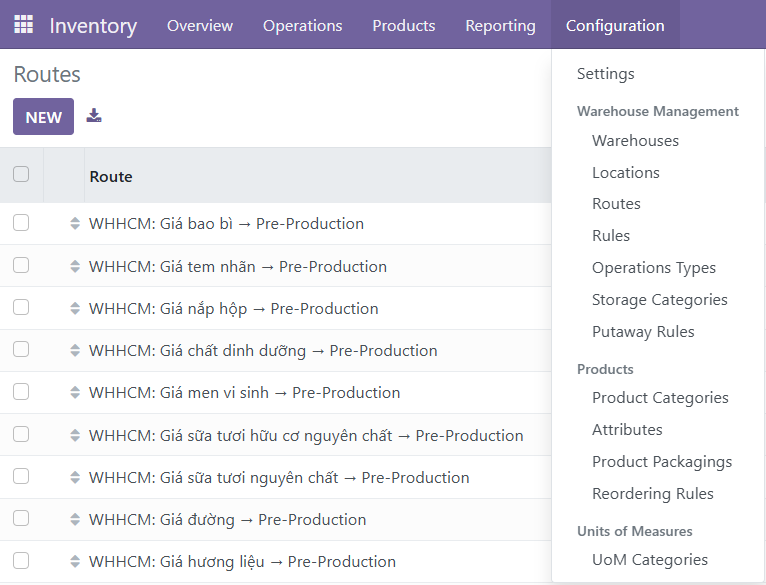
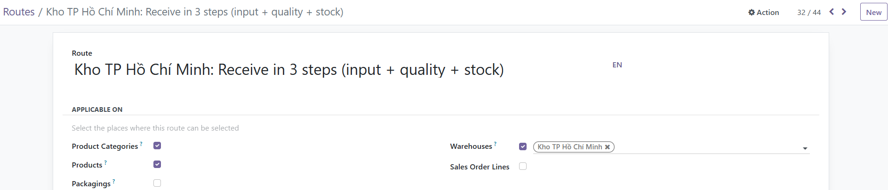
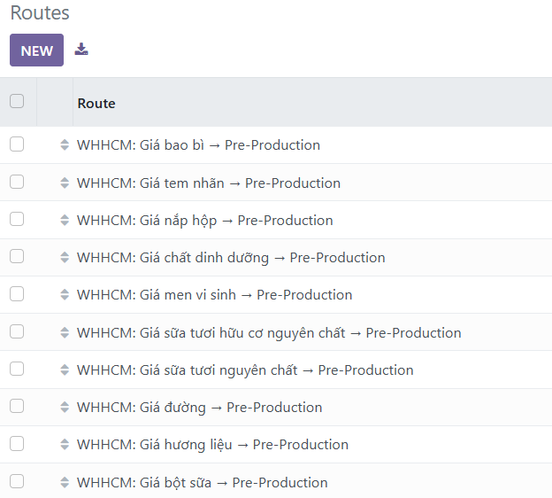
Odoo Implementation – Master Data (Products, Partners, BOM)
Before any transaction could be recorded, we needed a clean set of master data: purchasable products, suppliers, customers, and — for manufactured items — a Bill of Materials defining exactly what goes into each product.
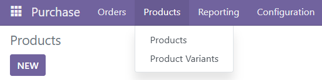
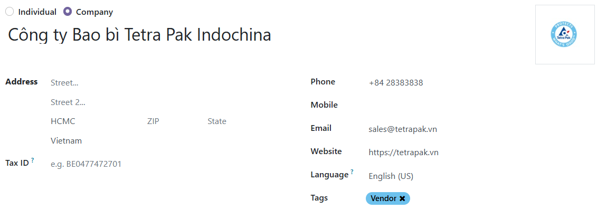
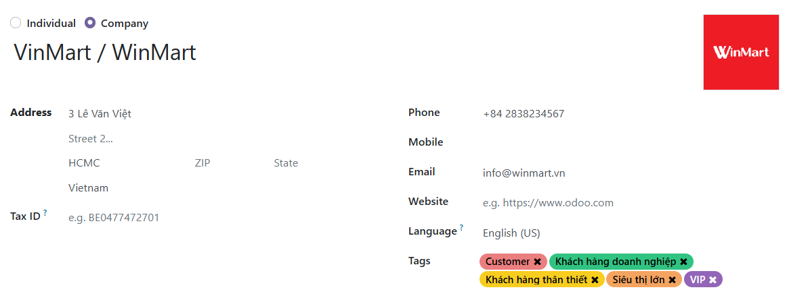
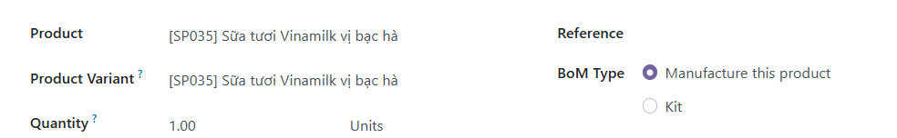
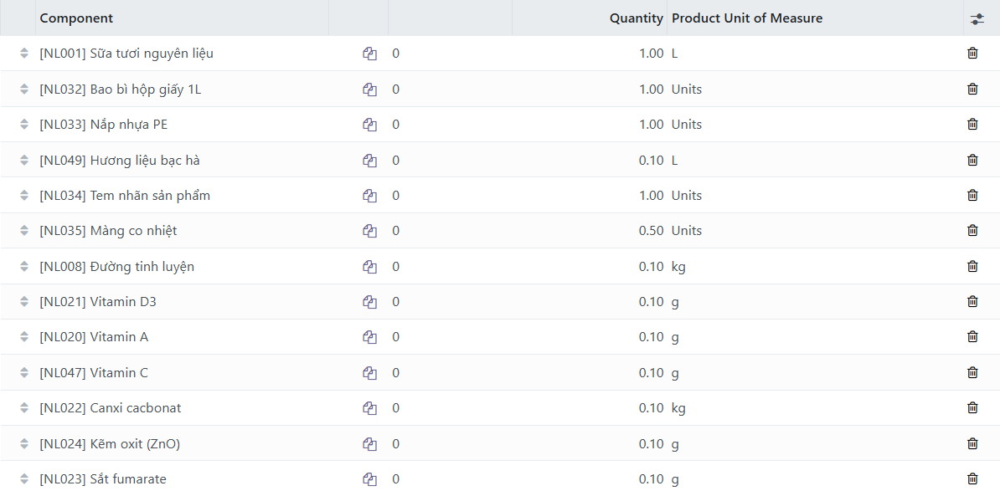
Process in Action – Purchase to Payment (AD01)
This is the Activity Diagram above, running as a real Odoo process: a request for quotation goes out to the supplier, the goods are received into the correct warehouse, and payment is recorded once the vendor bill is confirmed.
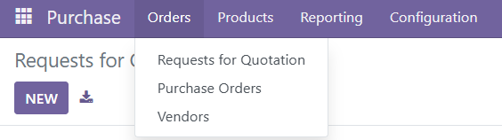
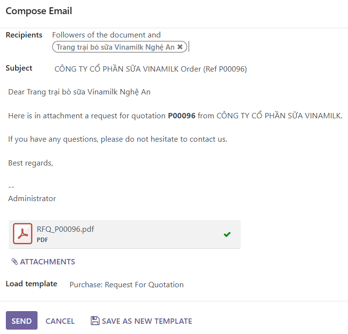
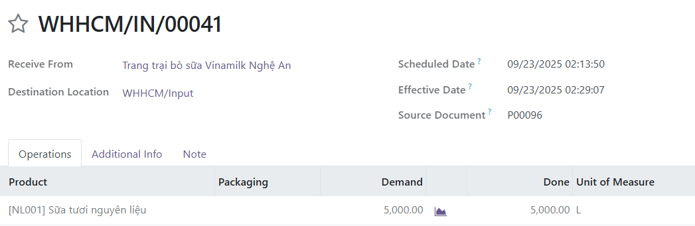
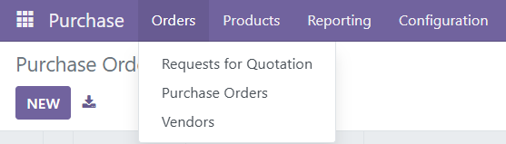
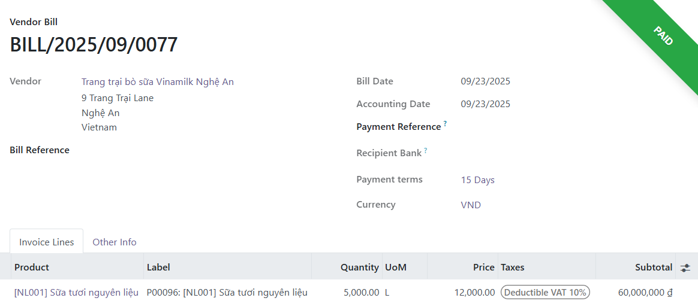
Process in Action – Manufacturing (AD02)
Once raw materials are in stock, a Manufacturing Order consumes them according to the product's BOM and produces the finished good, which is then stored in its designated location.
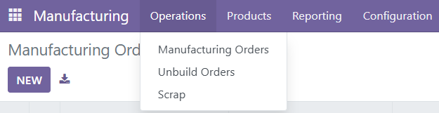
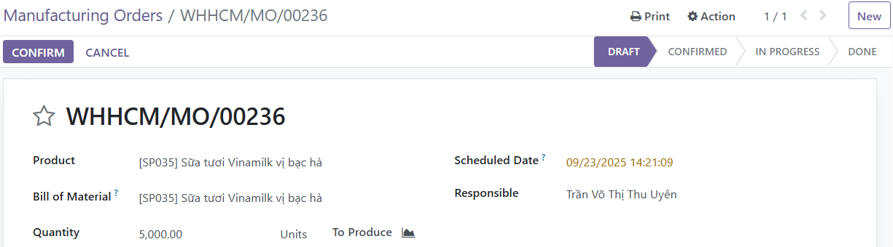
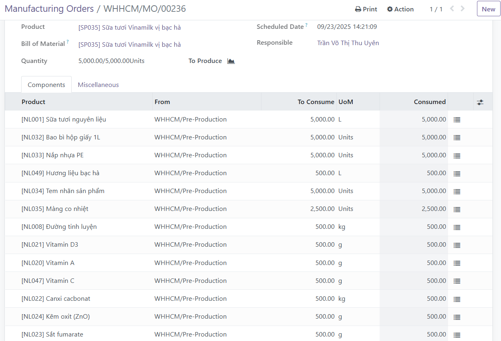
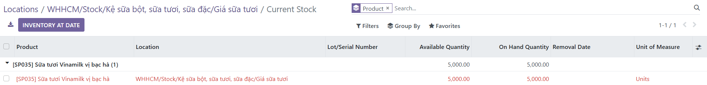
Process in Action – Sales to Cash (AD03 & AD04)
On the sales side, an opportunity in the CRM pipeline turns into a quotation, then a confirmed order that triggers delivery from the warehouse and, finally, a paid customer invoice.
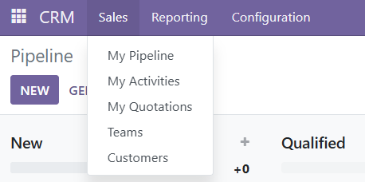
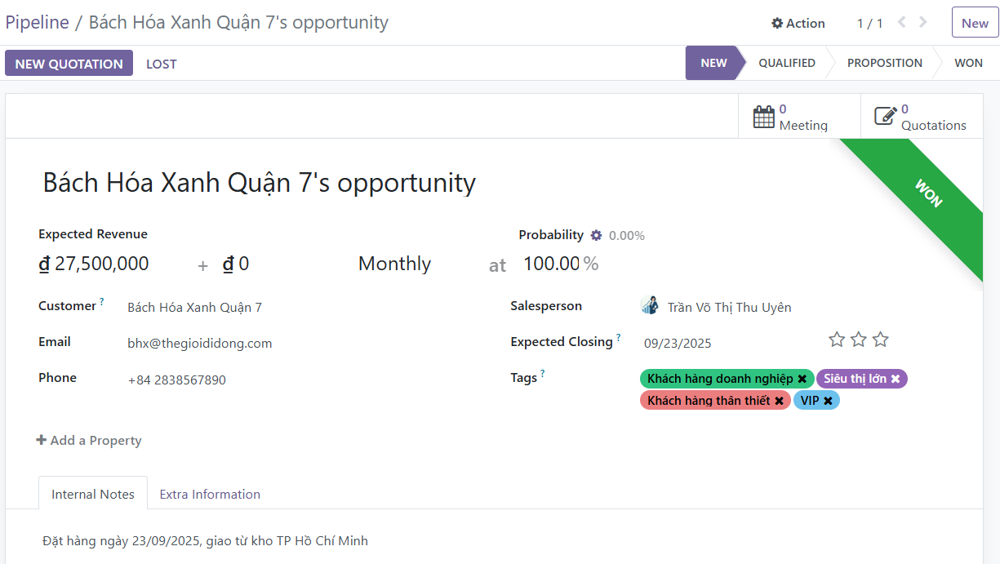
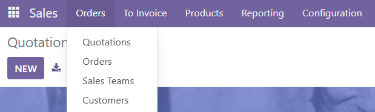
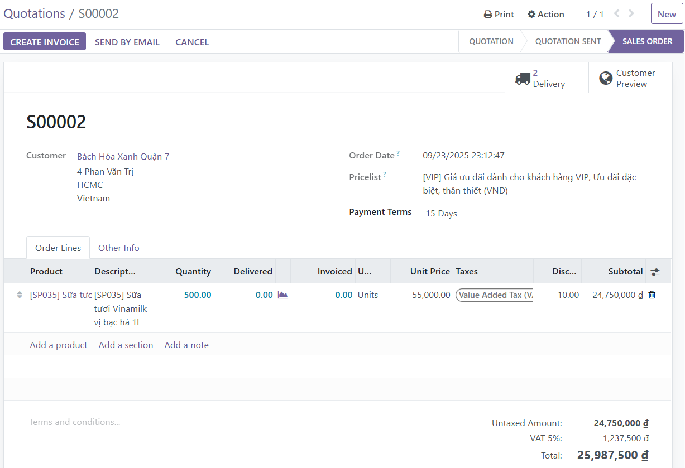
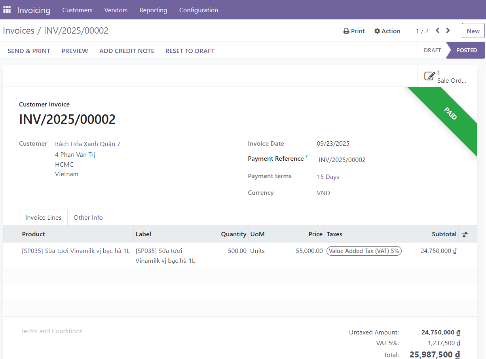